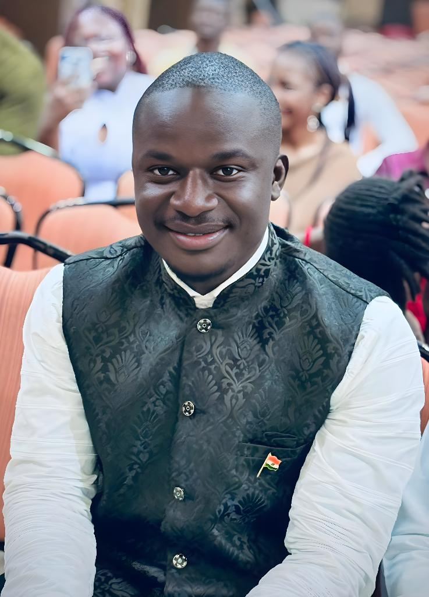
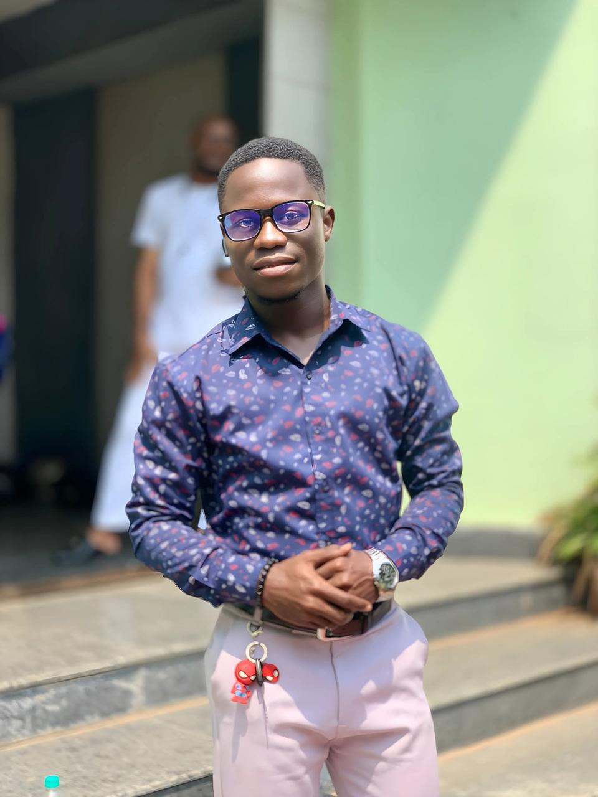
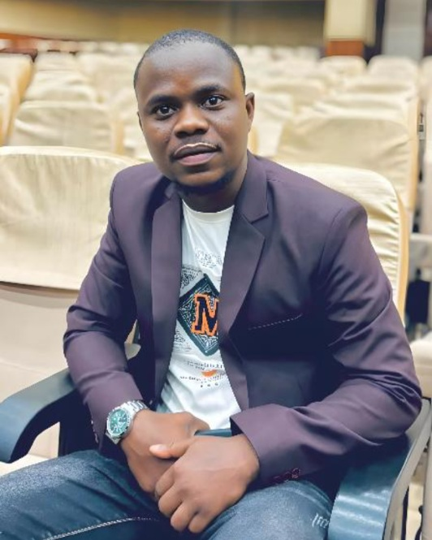
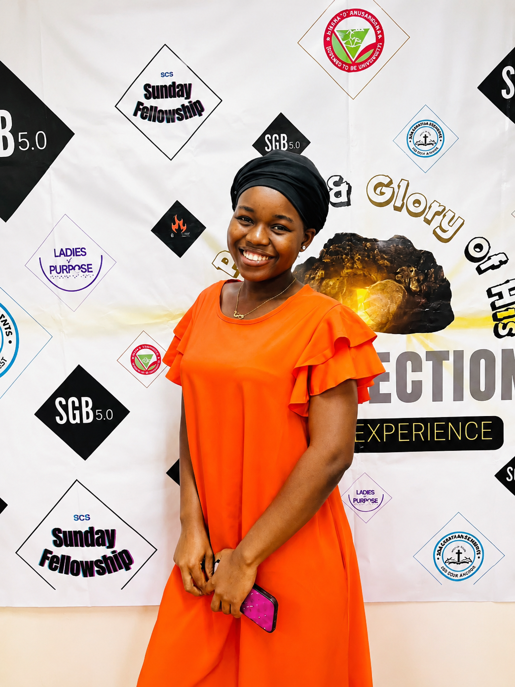

SOA Chapter
History of SOA Chapter
The story of Liberian students at Siksha 'O' Anusandhan (SOA) University is one of courage, perseverance, unity
and friendship. It is a story that reminds every Liberian student studying abroad that success is not achieved
alone but through determination and mutual support. The journey began on 31 August 2022, when Arison N. Lekpor
became the first Liberian student to arrive at SOA University. Soon afterward, his first Liberian brother, Mamadu
all arrived to pursue a Master of Business Administration (MBA).
He was followed by Elijah Saseywah,
who enrolled in a Master of Science in Agriculture. As the months passed, more Liberian students joined the
university, forming a growing family far away from home. Eventually, the Liberian student population at SOA
University reached twelve (12) students, equally divided into six men and six women.
Meet the Estiblish Member of SOA Chapter:
- Arison N. Lekpor - Pioneer Student, Master of Public Health (MPH)
- Mamadu Sall - Master of Business Administration (MBA)
- Elijah Saseywah - M.Sc. Agriculture
- Andrew K. Dean - President Emeritus, M.Sc. Clinical Psychology
- Naomi G. Garlo - Master of Public Health (MPH)
- Esther Flomo – - Vice President Emeritus, Master of Public Health (MPH)
- Samuel G. Gbelah - M.Sc. Biotechnology
- Ayouba B. Kamara – Master of Business Administration (MBA)
- Princess B. Ola – Master of Public Health (MPH)
- Blessing N. Akuma – Bachelor of Science in Optometry
- Depeh Young – Bachelor of Science in Law
- Maaphin Bility – Bachelor of Science in Optometry
Meet the dedicated students leading SOA Chapter

Mr. Edward M. Cole
President
Bachelor of Technology in Electrical Engineering (B.Tech)
Mr. Edward M. Cole is a dedicated student leader and visionary advocate for academic excellence, student welfare, and inclusive leadership. As the first democratic leader of the SOA Chapter, he has worked tirelessly to create an environment where students can thrive academically, socially, and culturally. His leadership journey began long before his presidency, with service in key roles that strengthened communication, organization, and student engagement. He previously served as Media Director, where he promoted the activities of the chapter and improved communication with the wider student body. He later served as Secretary General, where he contributed to better coordination, transparency, and organizational effectiveness. These experiences prepared him to lead the chapter with purpose and dedication. Under his leadership, the SOA Chapter has continued to foster unity, encourage active participation, and represent student interests with professionalism and commitment.

Lucious T. Ben
Vice President
Bachelor of Technology in Electrical Engineering (B.Tech)
Mr. Lucious T. Ben is a committed student leader and a passionate advocate for student welfare and academic development. He has been actively involved in student initiatives that enhance both the academic and social experience at SOA University. His leadership journey began as a committee member, where he demonstrated strong organizational skills, responsibility, and a genuine commitment to student engagement. As Vice President, he works closely with the President to implement programs that promote unity, academic excellence, and cultural exchange among students. His approachable nature, willingness to listen, and dedication to service have made him a trusted and respected figure within the chapter.

Mr. Jackson L. Solo II
Secretary General
Bachelor of Computer Application (BCA)
Mr. Jackson L. Solo II is a dedicated student leader whose leadership journey reflects a strong commitment to advocacy, communication, and student welfare. His experience at the All Liberian Students in India (ALSI) platform laid the foundation for his leadership, where he served on the Education and Student Welfare Committee and later represented the SOA Chapter in the fourth house of parliament as Deputy Speaker. These roles strengthened his ability to communicate effectively, represent student interests, and promote unity among Liberians in Odisha. As Secretary General of the SOA Chapter, he has been instrumental in improving communication between the executive committee and the student body, ensuring that student voices are heard and represented. His organizational skills and dedication to service continue to contribute significantly to the chapter’s success.

Mr. Abraham Daniel
Financial Secretary
Bachelor of Science in Nursing
Mr. Abraham Daniel is a dedicated student leader, community servant, and passionate advocate for academic excellence. He serves as the Program Coordinator of SEED (Student Empowerment and Educational Development), a role that reflects his commitment to student growth and empowerment. With experience in financial management, he was appointed Financial Secretary of the SOA Chapter, where he helps ensure transparency, accountability, and responsible stewardship of chapter resources. His respect for the student body, attention to detail, and strong sense of responsibility have earned him the trust of his peers. He remains committed to positive leadership, education, and service that contributes to the continued progress of the chapter.

Miss Priscilla N. Suah
Treasurer
Bachelor of Arts and Bachelor of Law
Miss Priscilla N. Suah is a committed student leader whose dedication to academic excellence, leadership, and service continues to strengthen the SOA Chapter. As Treasurer, she is responsible for managing chapter funds, ensuring their safe custody, and overseeing strategic disbursement to support student initiatives and successful events. Her role requires discipline, accountability, and financial prudence, all of which she brings with professionalism. Through her leadership, she has developed strong organizational, financial, and teamwork skills while contributing to a culture of unity and collaboration among students. Her work supports the chapter’s mission of creating meaningful opportunities for growth, engagement, and development.